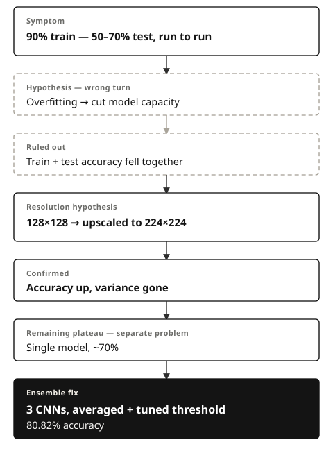
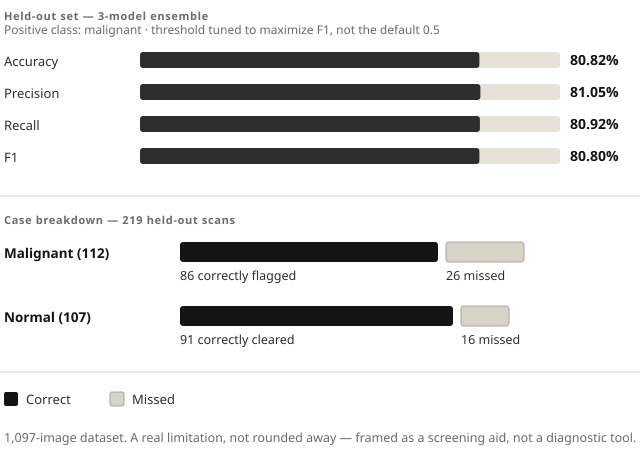

Case study — lung cancer detection
Ruling Out the Wrong Bug

The problem
An ensemble of CNNs, trained to classify lung CT scans as malignant or normal, scored above 90% on training data. On new images, accuracy swung wildly — anywhere from 50% to 70%, run to run. That reads like the textbook overfitting signature: strong on training data, unstable and weak on anything new.
What I did
I started by treating it as overfitting and cut the model's capacity — fewer parameters, less room to memorize. Accuracy dropped on training data and on test data.
That result ruled the diagnosis out: overfitting predicts training accuracy staying high while test accuracy suffers. Both falling together meant the model wasn't memorizing — there wasn't enough resolution in the images for it to pick up the pattern.
"Both falling together ruled out overfitting — a fix that predicts one thing and produces another means the diagnosis was wrong, not the model."
Email me for a screening callI went back and looked at the images directly. They were 128×128 pixels — too low-resolution to show the fine detail a diagnosis depends on. I tested that theory in isolation, changing nothing else: upscaled the inputs to 224×224. Accuracy went up, and the run-to-run variance disappeared. The instability had never been overfitting — it was the same resolution problem, confirmed.
With the real bottleneck fixed, I built up the architecture properly — deeper (5 convolutional blocks), regularized (L2, dropout, batch normalization) — and pushed a single model to about 70% accuracy, where it plateaued across runs. That plateau was a separate problem: not a misdiagnosis this time, just a ceiling on what one model could do. I trained three CNNs — identical architecture, different random seeds, same 80/20 split — and combined their predictions by averaging outputs and applying a threshold tuned to maximize F1, rather than leaving it at a default 0.5.
What came of it
The ensemble reached 80.82% accuracy (81.05% precision, 80.92% recall, macro-averaged) on held-out data — up from a single model plateaued at ~70%, and from an unstable baseline that never should have been diagnosed as overfitting in the first place.

Of 112 malignant cases in the test set, it correctly flagged 86 and missed 26 — a real limitation on a small dataset, and the reason I'd frame this as a screening aid, not a diagnostic tool.
Want to talk through how I'd debug something like this on your team?
Email me for a screening call